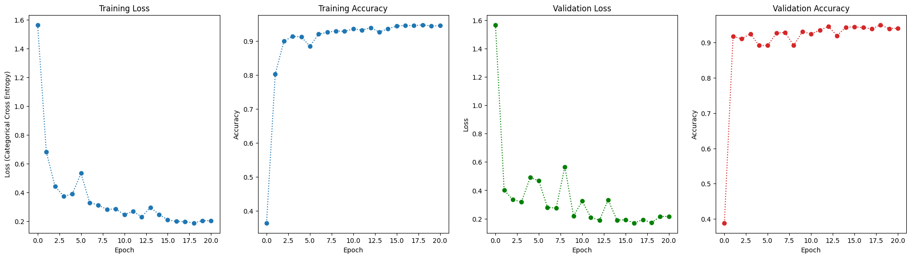
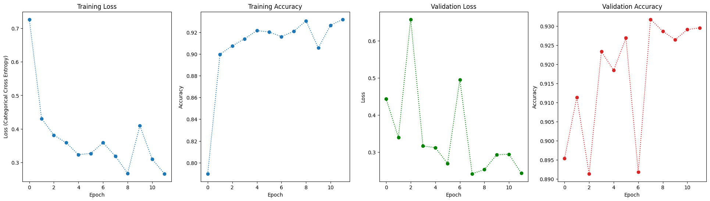
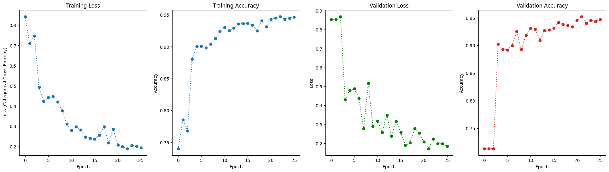
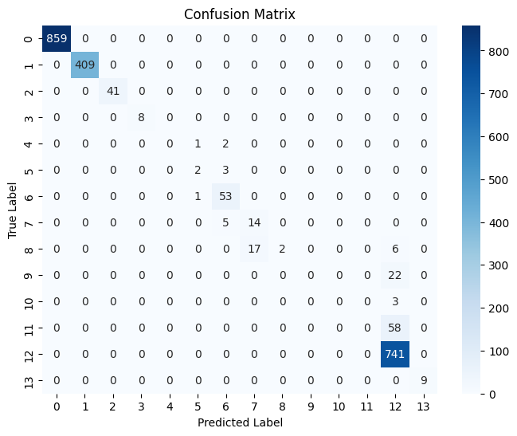

from itertools import product
from datetime import datetime
from typing import Union
from pathlib import Path
from sklearn.model_selection import train_test_split
from sklearn.preprocessing import StandardScaler
from torch.utils.data import DataLoader, TensorDataset
from sklearn.metrics import confusion_matrix
import seaborn as sns
import numpy as np
import pandas as pd
import matplotlib.pyplot as plt
import torch
import torch.nn as nn| format: html: embed-resources: true |
import statements
scheduler
class CosineWarmupScheduler(torch.optim.lr_scheduler._LRScheduler):
def __init__(self, optimizer, warmup, max_iters):
self.warmup = warmup
self.max_num_iters = max_iters
super().__init__(optimizer)
def get_lr(self):
lr_factor = self.get_lr_factor(epoch=self.last_epoch)
return [base_lr * lr_factor for base_lr in self.base_lrs]
def get_lr_factor(self, epoch):
lr_factor = 0.5 * (1 + np.cos(np.pi * epoch / self.max_num_iters))
if epoch <= self.warmup:
lr_factor *= epoch * 1.0 / self.warmup
return lr_factorimport data
religion_data = pd.read_csv('../data/religion_full_currel.csv')transformer
class TransformerBlock(nn.Module):
def __init__(self, in_features, embed_dim, ff_dim, num_heads, dropout, norm_eps, device):
super().__init__()
self.device = device
# Multi-head self-attention
self.attention = nn.MultiheadAttention(embed_dim, num_heads, dropout=dropout, batch_first=True)
# Layer normalization
self.norm1 = nn.LayerNorm(embed_dim, eps=norm_eps)
self.norm2 = nn.LayerNorm(embed_dim, eps=norm_eps)
# Feedforward network
self.feedforward = nn.Sequential(
nn.Linear(embed_dim, ff_dim),
nn.ReLU(),
nn.Dropout(dropout),
nn.Linear(ff_dim, embed_dim)
)
self.dropout = nn.Dropout(dropout)
def forward(self, x):
# Self-attention with residual connection
attn_output, _ = self.attention(x, x, x)
x = self.norm1(x + self.dropout(attn_output))
# Feedforward with residual connection
ff_output = self.feedforward(x)
x = self.norm2(x + self.dropout(ff_output))
return x
class TransformerClassifier(nn.Module):
def __init__(
self, input_dim, embed_dim, ff_dim, num_heads,
num_blocks, num_classes, dropout, norm_eps, device
):
super().__init__()
self.device = device
# Project numerical features to embedding space
self.input_proj = nn.Linear(input_dim, embed_dim)
# Stacked transformer blocks
self.blocks = nn.ModuleList([
TransformerBlock(
in_features=embed_dim,
embed_dim=embed_dim,
ff_dim=ff_dim,
num_heads=num_heads,
dropout=dropout,
norm_eps=norm_eps,
device=device
) for _ in range(num_blocks)
])
# Final classification layer
self.classifier = nn.Linear(embed_dim, num_classes)
def forward(self, x):
# x: (batch_size, input_dim)
x = self.input_proj(x) # (batch_size, embed_dim)
x = x.unsqueeze(1) # (batch_size, 1, embed_dim)
for block in self.blocks:
x = block(x) # (batch_size, 1, embed_dim)
x = x.squeeze(1) # (batch_size, embed_dim)
logits = self.classifier(x) # (batch_size, num_classes)
return logits
# Inputs: numerical features, shape (batch_size, input_dim)
# Labels: class indices, shape (batch_size,), dtype=torch.longhyperparams
# Model hyper-parameters
NUM_BLOCKS = 2 # Number of transformer bocks
NUM_HEADS = 4 # Number of heads in each multi-attention layer
EMB_DIM = 512 # Embedding (num_heads*key_dim)
FF_DIM = 1028 # Max dimension of feed forward layer (other dim in emb.)
LAYER_EPS = 1e-6 # Added to denominator of layer norm for numerical stability
# Data hyper-parameters
EPOCHS = 100 # Total epochs
BATCH_SIZE = 128 # Number of sequences (true batch = sequence length X batch)
START_BATCH = 0 # Which batch number to start from
SEQUENCE_SIZE = 80 # Max tokens in a time step
MAX_VOCAB = 10000 # Max vocabulary after this words marked with UNK token
# Training and optimization hyper-parameters
LR = 0.001
# L1 = 0
# L2 = 0
# L2_NORM = 100
MAX_NORM = 10 # The max norm before gradient clipping occurs
DROPOUT = 0.1 # Dropout rate
WARM_UP = 30 # LR warm up iterations (epoch before 0.001 reached)
MAX_ITER = 2000 # Max iterations of the LR scheduler
BETA_1 = 0.9 # Optimizer hyper-parameter (decay rate of momentum)
BETA_2 = 0.999 # Optimizer hyper-parameter (decay rate of squared gradients)
EPS = 1e-7 # Optimizer hyper-parameter Prevents division by 0
model_number = 0
load_model = False
checkpoint_path = Path(
'./checkpoints/checkpoint-{}.pt'.format(model_number)
)
assert EMB_DIM%NUM_HEADS == 0, 'Embedding dimension must be divisible by number of attention heads'
# Check devices
device = 'cpu'
if torch.cuda.is_available():
device = 'cuda'dataloader
from sklearn.preprocessing import LabelEncoder
label_encoder = LabelEncoder()
df_clean = religion_data.drop(columns=['CURREL'])
X = religion_data.drop(columns=['CURREL'])
y = religion_data['CURREL']
y = label_encoder.fit_transform(y)
X = X.values if hasattr(X, 'values') else X
y = y.values if hasattr(y, 'values') else y
X_train, X_temp, y_train, y_temp = train_test_split(X, y, test_size=0.2, random_state=42, shuffle=True)
X_val, X_test, y_val, y_test = train_test_split(X_temp, y_temp, test_size=0.5, random_state=42, shuffle=True)
X_train_tensor = torch.tensor(X_train, dtype=torch.float32)
y_train_tensor = torch.tensor(y_train, dtype=torch.long)
X_val_tensor = torch.tensor(X_val, dtype=torch.float32)
y_val_tensor = torch.tensor(y_val, dtype=torch.long)
X_test_tensor = torch.tensor(X_test, dtype=torch.float32)
y_test_tensor = torch.tensor(y_test, dtype=torch.long)
# Create datasets
train_dataset = TensorDataset(X_train_tensor, y_train_tensor)
val_dataset = TensorDataset(X_val_tensor, y_val_tensor)
test_dataset = TensorDataset(X_test_tensor, y_test_tensor)
# Create dataloaders
train_loader = DataLoader(train_dataset, batch_size=32, shuffle=True)
val_loader = DataLoader(val_dataset, batch_size=32)
test_loader = DataLoader(test_dataset, batch_size=32)
# Data preparation (assuming you've already split data into train/val/test)
input_dim = X_train.shape[1] # Number of features (columns)
num_classes = len(set(y_train)) # Number of unique classes
# Instantiate the model
model = TransformerClassifier(
input_dim=input_dim, # Number of features
embed_dim=EMB_DIM, # Embedding dimension
ff_dim=FF_DIM, # Feedforward layer dimension
num_heads=NUM_HEADS, # Number of attention heads
num_blocks=NUM_BLOCKS, # Number of transformer blocks
num_classes=num_classes, # Number of classes
dropout=DROPOUT, # Dropout rate
norm_eps=LAYER_EPS, # Layer norm epsilon for numerical stability
device=torch.device(device) # Use either CPU or GPU
)
# Move model to the appropriate device (CPU or GPU)
model = model.to(device)
criterion = nn.CrossEntropyLoss()
optimizer = torch.optim.Adam(model.parameters(), lr=LR)
scheduler = CosineWarmupScheduler(optimizer, warmup=WARM_UP, max_iters=MAX_ITER)
from IPython import display
def plot_training(
train_loss, train_acc, val_loss, val_acc
):
fig = plt.figure(1, figsize=(24, 6))
plt.clf()
ax1 = fig.add_subplot(1, 4, 1) # (Rows, Columns, Position)
ax2 = fig.add_subplot(1, 4, 2) # (Rows, Columns, Position)
ax3 = fig.add_subplot(1, 4, 3) # (Rows, Columns, Position)
ax4 = fig.add_subplot(1, 4, 4) # (Rows, Columns, Position)
epochs = range(len(train_loss))
ax1.set_title('Training Loss')
ax1.set_xlabel('Epoch')
ax1.set_ylabel('Loss (Categorical Cross Entropy)')
ax1.plot(epochs, train_loss, marker='o', linestyle=':')
ax2.set_title('Training Accuracy')
ax2.set_xlabel('Epoch')
ax2.set_ylabel('Accuracy')
ax2.plot(epochs, train_acc, marker='o', linestyle=':')
ax3.set_title('Validation Loss')
ax3.set_xlabel('Epoch')
ax3.set_ylabel('Loss')
ax3.plot(epochs, val_loss, marker='o', color='g', linestyle=':')
ax4.set_title('Validation Accuracy')
ax4.set_xlabel('Epoch')
ax4.set_ylabel('Accuracy')
ax4.plot(epochs, val_acc, marker='o', color='C3', linestyle=':')
display.display(plt.gcf())
display.clear_output(wait=True)train
import copy
def training(model):
# Initialize tracking lists
train_loss = []
valid_loss = []
train_acc = []
valid_acc = []
# Early stopping parameters
patience = 5
best_val_loss = float('inf')
epochs_without_improvement = 0
best_model_state = None
# Set model to training mode
model.train()
# Initialize optimizer and loss function
optimizer = torch.optim.Adam(
model.parameters(),
lr=LR,
betas=(BETA_1, BETA_2),
eps=EPS
)
criterion = torch.nn.CrossEntropyLoss()
# Training loop
for epoch in range(EPOCHS):
running_loss = 0.0
correct = 0
total = 0
model.train()
for batch_idx, (X_batch, y_batch) in enumerate(train_loader):
X_batch, y_batch = X_batch.to(device), y_batch.to(device)
optimizer.zero_grad()
outputs = model(X_batch)
loss = criterion(outputs, y_batch)
loss.backward()
optimizer.step()
scheduler.step()
running_loss += loss.item()
_, predicted = torch.max(outputs, 1)
correct += (predicted == y_batch).sum().item()
total += y_batch.size(0)
if batch_idx % 100 == 99:
print(f"Epoch [{epoch+1}/{EPOCHS}], Batch [{batch_idx+1}/{len(train_loader)}], Loss: {loss.item():.4f}")
# Calculate average epoch loss and accuracy
epoch_loss = running_loss / len(train_loader)
epoch_accuracy = correct / total
print(f"Epoch [{epoch+1}/{EPOCHS}] Loss: {epoch_loss:.4f}, Accuracy: {epoch_accuracy:.4f}")
train_loss.append(epoch_loss)
train_acc.append(epoch_accuracy)
# Validation
model.eval()
val_loss = 0.0
val_correct = 0
val_total = 0
with torch.no_grad():
for X_val_batch, y_val_batch in val_loader:
X_val_batch, y_val_batch = X_val_batch.to(device), y_val_batch.to(device)
outputs = model(X_val_batch)
loss = criterion(outputs, y_val_batch)
val_loss += loss.item()
_, predicted = torch.max(outputs, 1)
val_correct += (predicted == y_val_batch).sum().item()
val_total += y_val_batch.size(0)
val_loss /= len(val_loader)
val_accuracy = val_correct / val_total
valid_loss.append(val_loss)
valid_acc.append(val_accuracy)
print(f"Validation Loss: {val_loss:.4f}, Validation Accuracy: {val_accuracy:.4f}")
# Early stopping check
if val_loss < best_val_loss:
best_val_loss = val_loss
epochs_without_improvement = 0
best_model_state = copy.deepcopy(model.state_dict())
else:
epochs_without_improvement += 1
print(f"No improvement in validation loss for {epochs_without_improvement} epoch(s).")
if epochs_without_improvement >= patience:
print(f"Early stopping triggered after {patience} epochs without improvement.")
break
# Plot training progress
plot_training(train_loss, train_acc, valid_loss, valid_acc)
# Restore best model weights
if best_model_state is not None:
model.load_state_dict(best_model_state)
print("Loaded best model based on validation loss.")
return model, best_val_loss
model,best_val_loss = training(model)Epoch [22/100], Batch [100/564], Loss: 0.2576
Epoch [22/100], Batch [200/564], Loss: 0.1171
Epoch [22/100], Batch [300/564], Loss: 0.1203
Epoch [22/100], Batch [400/564], Loss: 0.2829
Epoch [22/100], Batch [500/564], Loss: 0.2142
Epoch [22/100] Loss: 0.2065, Accuracy: 0.9453
Validation Loss: 0.1785, Validation Accuracy: 0.9468
No improvement in validation loss for 5 epoch(s).
Early stopping triggered after 5 epochs without improvement.
Loaded best model based on validation loss.
# Set model to evaluation mode
model.eval()
test_loss = 0.0
test_correct = 0
test_total = 0
all_preds = []
all_labels = []
# No need to track gradients during inference
with torch.no_grad():
for X_test_batch, y_test_batch in test_loader:
X_test_batch, y_test_batch = X_test_batch.to(device), y_test_batch.to(device)
outputs = model(X_test_batch)
loss = criterion(outputs, y_test_batch)
test_loss += loss.item()
_, predicted = torch.max(outputs, 1)
all_preds.extend(predicted.cpu().numpy()) # Store predictions on CPU
all_labels.extend(y_test_batch.cpu().numpy()) # Store true labels on CPU
test_correct += (predicted == y_test_batch).sum().item()
test_total += y_test_batch.size(0)
# Calculate average test loss and accuracy
test_loss = test_loss / len(test_loader)
test_accuracy = test_correct / test_total
print(f"Test Loss: {test_loss:.4f}, Test Accuracy: {test_accuracy:.4f}")
# Generate confusion matrix
cm = confusion_matrix(all_labels, all_preds)
# Visualize confusion matrix using seaborn heatmap
plt.figure(figsize=(8, 6))
sns.heatmap(cm, annot=True, fmt='d', cmap='Blues', xticklabels=True, yticklabels=True)
plt.title('Confusion Matrix')
plt.xlabel('Predicted Label')
plt.ylabel('True Label')
plt.show()Test Loss: 0.1687, Test Accuracy: 0.9437hyperparam tuning
import itertools
import random
# Define the grid
param_grid = {
'EMB_DIM': [64, 128],
'FF_DIM': [128, 256],
'NUM_HEADS': [2, 4],
'NUM_BLOCKS': [1, 2],
'DROPOUT': [0.1, 0.3],
'LAYER_EPS': [1e-5],
'LR': [1e-4, 5e-5],
}
# Get all combinations (or use random.sample for random search)
param_combos = list(itertools.product(*param_grid.values()))
random.shuffle(param_combos) # Randomize for random search
best_val_loss = 0.0
best_params = None
best_model = None
for i, combo in enumerate(param_combos):
params = dict(zip(param_grid.keys(), combo))
print(f"\n🔍 Trying config {i+1}/{len(param_combos)}: {params}")
# Instantiate model
model = TransformerClassifier(
input_dim=input_dim,
embed_dim=params['EMB_DIM'],
ff_dim=params['FF_DIM'],
num_heads=params['NUM_HEADS'],
num_blocks=params['NUM_BLOCKS'],
num_classes=num_classes,
dropout=params['DROPOUT'],
norm_eps=params['LAYER_EPS'],
device=device
).to(device)
optimizer = torch.optim.Adam(model.parameters(), lr=params['LR'])
scheduler = CosineWarmupScheduler(optimizer, warmup=WARM_UP, max_iters=MAX_ITER)
criterion = torch.nn.CrossEntropyLoss()
# === Train for few epochs (or full) ===
model, val_loss = training(model)
# Track best model
if val_loss > best_val_loss:
best_val_loss = val_loss
best_params = params
best_model = model.state_dict()
print("\n✅ Best config:", best_params)
print(f"Validation Loss: {best_val_loss:.4f}")Epoch [13/100], Batch [100/564], Loss: 0.5369
Epoch [13/100], Batch [200/564], Loss: 0.4406
Epoch [13/100], Batch [300/564], Loss: 0.3365
Epoch [13/100], Batch [400/564], Loss: 0.1489
Epoch [13/100], Batch [500/564], Loss: 0.1938
Epoch [13/100] Loss: 0.2681, Accuracy: 0.9314
Validation Loss: 0.2481, Validation Accuracy: 0.9362
No improvement in validation loss for 5 epoch(s).
Early stopping triggered after 5 epochs without improvement.
Loaded best model based on validation loss.
✅ Best config: {'EMB_DIM': 128, 'FF_DIM': 128, 'NUM_HEADS': 2, 'NUM_BLOCKS': 2, 'DROPOUT': 0.1, 'LAYER_EPS': 1e-05, 'LR': 5e-05}
Validation Loss: 0.4793
# Data preparation (assuming you've already split data into train/val/test)
input_dim = X_train.shape[1] # Number of features (columns)
num_classes = len(set(y_train)) # Number of unique classes
# Instantiate the model
model = TransformerClassifier(
input_dim=input_dim, # Number of features
embed_dim=128, # Embedding dimension
ff_dim=128, # Feedforward layer dimension
num_heads=2, # Number of attention heads
num_blocks=2, # Number of transformer blocks
num_classes=num_classes, # Number of classes
dropout=0.1, # Dropout rate
norm_eps=1e-05, # Layer norm epsilon for numerical stability
device=torch.device(device) # Use either CPU or GPU
)
# Move model to the appropriate device (CPU or GPU)
model = model.to(device)
criterion = nn.CrossEntropyLoss()
optimizer = torch.optim.Adam(model.parameters(), lr=5e-5)
scheduler = CosineWarmupScheduler(optimizer, warmup=WARM_UP, max_iters=MAX_ITER)
model, val_loss = training(model)
model.eval()
test_loss = 0.0
test_correct = 0
test_total = 0
all_preds = []
all_labels = []
# No need to track gradients during inference
with torch.no_grad():
for X_test_batch, y_test_batch in test_loader:
X_test_batch, y_test_batch = X_test_batch.to(device), y_test_batch.to(device)
outputs = model(X_test_batch)
loss = criterion(outputs, y_test_batch)
test_loss += loss.item()
_, predicted = torch.max(outputs, 1)
all_preds.extend(predicted.cpu().numpy()) # Store predictions on CPU
all_labels.extend(y_test_batch.cpu().numpy()) # Store true labels on CPU
test_correct += (predicted == y_test_batch).sum().item()
test_total += y_test_batch.size(0)
# Calculate average test loss and accuracy
test_loss = test_loss / len(test_loader)
test_accuracy = test_correct / test_total
print(f"Test Loss: {test_loss:.4f}, Test Accuracy: {test_accuracy:.4f}")
# Generate confusion matrix
cm = confusion_matrix(all_labels, all_preds)
# Visualize confusion matrix using seaborn heatmap
plt.figure(figsize=(8, 6))
sns.heatmap(cm, annot=True, fmt='d', cmap='Blues', xticklabels=True, yticklabels=True)
plt.title('Confusion Matrix')
plt.xlabel('Predicted Label')
plt.ylabel('True Label')
plt.show()Epoch [27/100], Batch [100/564], Loss: 0.0676
Epoch [27/100], Batch [200/564], Loss: 0.1142
Epoch [27/100], Batch [300/564], Loss: 0.0452
Epoch [27/100], Batch [400/564], Loss: 0.5429
Epoch [27/100], Batch [500/564], Loss: 0.1542
Epoch [27/100] Loss: 0.1708, Accuracy: 0.9514
Validation Loss: 0.1873, Validation Accuracy: 0.9517
No improvement in validation loss for 5 epoch(s).
Early stopping triggered after 5 epochs without improvement.
Loaded best model based on validation loss.
Test Loss: 0.1716, Test Accuracy: 0.9477
